건축산업기사 (2003-03-16 기출문제)
1과목: 건축계획
1. 진열장 유리의 흐림 방지를 하기 위한 방법은?
- 진열대 밑에 난방장치를 하여 내외의 온도차를 적게 한다.
- 진열장내의 밝기를 인공적으로 높게 한다.
- 차양을 달아 외부에 그늘을 준다.
- 곡면 유리를 사용한다.
(정답률: 46%)

2. 세계가족단체협회가 권장하고 있는 주택건축면적의 유효기준은 평균 얼마 이상인가?
- 8m2/인
- 10m2/인
- 14m2/인
- 16m2/인
(정답률: 67%)
3. 다음 중 아파트의 성립(成立)요소가 아닌 것은?
- 도시 생활자의 이동성
- 부지비, 건축비 등의 절약
- 세대 인원의 증가
- 도시 인구 밀도의 증가
(정답률: 29%)
4. 근린주구 생활권의 주택지의 단위로서, 아파트의 경우 3‾4층 건물1‾2동의 규모로 어린이놀이터가 중심이 되는 단위는?
- 근린분구
- 근린주구
- 주호
- 인보구
(정답률: 72%)
5. 사무소의 화장실 위치가 틀린 것은?
- 각 사무실에서 동선이 간단할 것
- 계단실, 엘리베이터 홀에 근접할 것
- 각층마다 분산배치할 것
- 가능하면 외기에 접하는 위치로 할 것
(정답률: 65%)
6. 사무소 기준층 층고의 결정에 대한 설명 가운데 적당하지 않은 사항은?
- 엘리베이터 크기
- 채광
- 공기조화(Air Conditioning)
- 사무실의 깊이
(정답률: 88%)
7. 각 상점의 방위에 대한 설명중 틀린 것은?
- 식료품점은 강한 석양을 피하는 장소가 적당하다.
- 양복점, 서점, 가구점의 방위는 변색방지를 위해서 북향이나 동향이 적당하다.
- 음식점은 양지 바른쪽이 좋다.
- 부인용품은 오후에 그늘이 지는 곳이 적당하다.
(정답률: 42%)
8. 일반 상점가나 시장 또는 일용상품의 상점에 가장 많이 사용되는 숍 프론트(shop front) 형식은?
- 혼합형
- 분리형
- 폐쇄형
- 개방형
(정답률: 70%)
9. 학교 건축계획에 있어서 블록플랜(Block plan)을 할 때 클러스터형(Cluster system)이란?
- 교실을 2-3개소마다 정리하여 독립시켜 배치하는 방법
- 복도를 따라 교실을 배치하는 방법
- 복도를 교실과 분리시키는 방법
- 일반교실과 특별교실을 섞어 배치시키는 방법
(정답률: 15%)
10. 어느 학교의 1주간 평균 수업시간은 40시간인데 미술교실이 사용되는 시간은 20시간이다. 그중 4시간은 영어 수업을 위해 사용될 때 미술교실의 이용률과 순수율은 얼마인가?
- 이용률 50%, 순수율 20%
- 이용률 50%, 순수율 80%
- 이용률 20%, 순수율 50%
- 이용률 80%, 순수율 50%
(정답률: 28%)
11. 주택에서 두 실간의 직상하층 관계가 가장 좋은 것은?
- 하층: 거실, 상층: 침실
- 하층: 침실, 상층: 욕실
- 하층: 기계실, 상층: 거실
- 하층: 침실, 상층: 가사실
(정답률: 79%)
12. 사무소 건축의 코어(Core)계획에 대한 설명으로 부적당한 것은?
- 엘리베이터 홀은 출입구문에 가급적 바싹 근접시켜 동선을 짧게 한다.
- 피난용 특별계단 상호간의 거리는 법정거리 내에서 가급적 멀리한다.
- 잡용실과 급탕실은 가급적 접근시킨다.
- 코어내의 동선과 임대사무실 사이의 동선은 간단히 한다.
(정답률: 43%)
13. 상점계획에 관한 기술 중 부적당한 것은?
- 점내의 상품이 통행인으로부터 잘 보이게 한다.
- 점내의 손님동선을 되도록 짧게한다.
- 쇼케이스에서의 점원의 동선은 짧고 능률적이어야 한다.
- 점원과 손님의 동선은 가급적이면 분리시킨다.
(정답률: 64%)
14. 공장계획에 관한 기술 중 옳지 않은 것은?
- 생산, 관리, 후생 등 각 부분의 시설을 한 곳에 집약시킨다.
- 가장 중요한 작업은 작업공정상 가장 유리한 곳에 위치시킨다.
- 공장계획에서 동력계획이 우선 결정되어야 한다.
- 장래의 확장성을 충분히 고려한다.
(정답률: 48%)
15. 주거단지의 보행자 도로계획시 잘못된 것은?
- 최소폭은 3인이 부딪치지 않고 통과할 수 있도록 2.4m 이상 확보해야 한다.
- 도로폭 15m 이상시 보도가 필요하다.
- 대규모 건축물의 입구가 직접 면하지 않도록 한다.
- 보도는 블록내에서 단절되지 말아야 하며, 다른 시설들로부터 방해를 받지 말아야 한다.
(정답률: 25%)
16. 공장건축의 평면계획에서 가장 중요한 사항은?
- 작업장내의 기계설비
- 생산공정에 따른 레이아웃
- 작업자의 작업구역
- 위생 및 후생관계시설
(정답률: 67%)
17. 사무소건축에서 의사전달과 작업의 흐름에 따라 배치하는 실 단위계획으로서 옳은 것은?
- 오피스 랜드스케이핑(office landscaping)
- 개실 시스템(individual room system)
- 개방식 배치(open floor plan)
- 2중지역 배치(double zone layout)
(정답률: 74%)
18. 교과교실형에서 인문사회계 교실의 이용율을 낮출 경우 고려할 사항이 아닌 것은?
- 교실의 융통성(融通性)
- 규모의 확장성(擴張性)
- 기능의 다목적성(多目的性)
- 교과교실의 전용성(專用性)
(정답률: 14%)
19. 주방과 식당이 한 실로 되어 있는 DK 형의 특징이 아닌것은?
- 식사와 취침은 분리하지만, 단란은 취침하는 곳과 겹칠 수 있다.
- 소규모 주택형에 적합한 형식이다.
- 식사실을 중심으로 단란한 생활형에 적합하다.
- 거실 겸 침실은 전용되는 온돌방으로 하는 경우가 많다.
(정답률: 22%)
20. 한식주택과 양식주택을 비교한 내용으로 옳지 않은 것은?
- 한식주택은 좌식생활이며, 양식주택은 입식생활이다.
- 평면구성상 실을 한식은 용도에 따라 호칭하고, 양식은 위치에 따라 호칭한다.
- 한식은 담장, 울타리가 높아지게 되며, 양식은 울타리가 거의 없어도 된다.
- 한식은 양식에 비해 실의 융통성이 높다
(정답률: 50%)
2과목: 건축시공
21. 다음 공사 중 가설공사에 해당되지 않는 것은?
- 비계 설치
- 규준틀 설치
- 현장사무실 축조
- 거푸집 설치
(정답률: 알수없음)
22. 공개경쟁 입찰인 경우 입찰조건을 설명 할 때 설명할 필요가 없는 것은 어느 것인가?
- 공사기간
- 공사비 지불조건
- 자재의 수량 및 공사금액
- 도급자 결정방법
(정답률: 29%)
23. 다음 기술 중 미장공사에 사용되는 것은?
- sliding form
- bar bender
- corner bead
- non slip
(정답률: 37%)
24. 다음 중 점토질 지반의 점착력을 알기위한 방법으로 적당한 것은?
- 소성한계(塑性限界)시험
- 액성한계(液性限界)시험
- 베인테스트(Vane test)
- 예민비(銳敏比)시험
(정답률: 알수없음)
25. 도장의 끝 마감칠은 기온이 몇 ℃이하일 때 도장작업을 중지하여야 하는가?
- 2 ℃
- 5 ℃
- 7 ℃
- 10 ℃
(정답률: 50%)
26. 콘크리트의 이어치기에 대한 설명이 옳지 않은 것은?
- 이어치기는 표면의 레이턴스를 제거하고 수분이 없는 상태에서 행한다.
- 이어치기는 원칙적으로 응력이 적은 곳에서 한다.
- 이어치기를 할 때에는 콜드 조인트(cold joint)가 발생하지 않도록 노력하여야 한다.
- 이어치기를 할 경우 진동기의 사용은 매우 적절하다.
(정답률: 34%)
27. 주택의 칠공사에서 회반죽 천정에 가장 좋은 칠은?
- 수성도료칠
- 유성도료칠
- 바니쉬칠
- 크레오소오트칠
(정답률: 24%)
28. 건축공사시 견적방법 중 가장 정확한 공사비의 산출이 가능한 견적방법으로 옳은 것은?
- 명세견적
- 개산견적
- 입찰견적
- 설계견적
(정답률: 알수없음)
29. 미장공사시 주의할 사항으로 맞지 않는 것은?
- 바탕면은 필요에 따라 물축임을 한다.
- 벽체 한공정의 바름두께는 6㎜이하로 한다.
- 초벌바름 후 물기가 없어지면 바로 재벌, 정벌을 한다.
- 바탕면을 거칠게 하여 모르타르 부착을 좋게 한다.
(정답률: 알수없음)
30. 목조 2층주택의 마루널과 반자널을 까는 경우 작업순서로 옳은 것은?
- 1층 마루바닥 → 1층 반자 → 2층 마루바닥 → 2층 반자
- 2층 마루바닥 → 2층 반자 → 1층 마루바닥 → 1층 반자
- 2층 반자 → 1층 반자 → 2층 마루바닥 → 1층 마루 바닥
- 1층 마루바닥 → 2층 마루바닥 → 1층 반자 → 2층 반자
(정답률: 65%)
31. 셀프레벨링재 바름 또는 셀프레벨링(Self Leveling)재에 대한 설명 중 틀린 것은?
- 재료는 대부분 기배합 상태로 이용되며, 석고계 재료는 물이 닿지 않는 실내에서만 사용한다.
- 모든 재료의 보관은 밀봉상태로 건조시켜 보관해야 하며, 직사광선이 닿지 않도록 해야 한다.
- 경화후 이어치기 부분의 돌출 및 기포 흔적이 남아있는 주변의 튀어나온 부위는 연마기로 갈아서 평탄하게 하고, 오목하게 들어간 부분 등은 된비빔 셀프레벨링재를 이용하여 보수한다.
- 셀프레벨링재의 표면에 물결무늬가 생기지 않도록 창문 등을 밀폐하여 통풍과 기류를 차단하고, 시공중이나 시공완료 후 기온이 0℃이하가 되지 않도록 한다.
(정답률: 37%)
32. 공사현장에서 시멘트 창고를 설치할 경우 주의사항으로 옳지 않은 것은?
- 지반은 바닥에서 30cm 이상 높이며 주변은 도랑을 두어 빗물이 들어가지 않도록 한다.
- 반입구와 반출구는 따로 두고 먼저 쌓은 것부터 사용하도록 한다.
- 출입구 채광창 이외에 공기의 유통을 목적으로 환기 창을 설치한다.
- 시멘트 쌓기의 높이는 13포대를 한도로 하고 1m2에 약 50포대 적재하며, 보통 30∼35포대가 적당하다.
(정답률: 알수없음)
33. 유성페인트 칠에서 광택과 피막의 강도를 증대시키려면 어느 것을 혼합해야 하는가?
- Benzin
- Cashew
- Thinner
- Boiled oil
(정답률: 50%)
34. 아스팔트의 양부를 판정하는데 간편한 시험방법으로 적당한 것은?
- 연화점
- 침입도
- 시공연도
- 마모도
(정답률: 30%)
35. 무량판구조, 또는 평판구조에서 특수상자모양의 기성재 거푸집을 무엇이라 하는가?
- 클라이밍폼
- 터널폼
- 와플폼
- 트래블링폼
(정답률: 50%)
36. 지하층 굴토 공사시 사용되는 계측 장비의 계측내용을 연결한 것 중 옳지 않은 것은?
- 간극 수압 - Piezo meter
- 인접건물의 균열 - Crack gauge
- 지반의 침하 - Inclino meter
- 흙막이의 변형 - Strain gauge
(정답률: 10%)
37. 그림과 같은 철근 콘크리트 기초에 사용된 콘크리트량으로 적당한 것은 ? (단, 단위 mm)
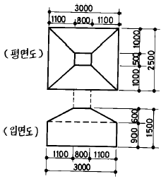
- 4.5m3
- 6.7m3
- 8.7m3
- 10.5m3
(정답률: 42%)
38. AE제에 관한 기술 중 맞는 것은?
- AE제를 넣을수록 공기량은 감소한다.
- AE제에 의한 공기량은 손비빔이 기계비빔 보다 증가한다.
- AE공기량은 온도가 높아질수록 증가한다.
- AE공기량은 진동을 주면 감소한다.
(정답률: 16%)
39. 고로시멘트의 특징으로 틀린 것은?
- 건조수축이 현저하게 적다.
- 화학저항성이 높아 해수· 공장폐수· 하수 등에 접하는 콘크리트에 적합하다.
- 수화열이 적어 매스콘크리트에 유리하다.
- 장기간 습윤보양이 필요하다.
(정답률: 28%)
40. 콘크리트 공사시 진동기(Vibrator)사용에 관한 기술 중 옳지 않은 것은?
- 진동기는 콘크리트 1일 부어 넣기량 50m3마다 1대 꼴로 한다.
- 진동기의 진동 영향 범위는 진동시간에 따라 틀리나 대략 30∼40초 정도가 적당하다.
- 진동기는 될 수 있는대로 수직으로 세워서 사용해야 한다.
- 진동기의 사용 간격은 진동 효과가 중복하지 아니하도록 60cm이내로 해야 한다.
(정답률: 알수없음)
3과목: 건축구조
41. 강도설계법에 의한 철근콘크리트의 슬래브 설계에서 그림과 같은 슬래브의 단위폭 1m 에 필요한 최소 철근량은 ? (단, fck(fc')=240 kg/cm2, fy=4,000 kg/cm2, 이형철근 사용)
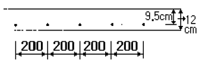
- 1.14cm2/m
- 1.82cm2/m
- 2.16cm2/m
- 2.56cm2/m
(정답률: 40%)
42. 포아송(poisson)비가 0.5일때 포아송수는?
- 2
- 3
- 5
- 8
(정답률: 46%)
43. 블럭조에서 테두리보를 설치하는 이유로서 옳지 않는 것은?
- 횡력에 대한 수직균열을 방지하기 위하여
- 내력벽을 일체로하여 하중을 균등히 분포시키기 위하여
- 지붕, 바닥 및 벽체의 하중을 내력벽에 전달하기 위하여
- 가로 철근의 끝을 정착시키기 위하여
(정답률: 65%)
44. 그림과 같은 부정정보를 정정보로 바꾸려면 몇 개의 힌지가 필요한가?
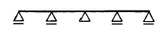
- 2개
- 3개
- 4개
- 5개
(정답률: 42%)
45. 그림과 같이 기둥 단면에 작용하는 최대응력도의 크기는?
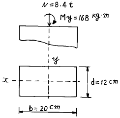
- 14㎏f/㎝2
- 28㎏f/㎝2
- 56㎏f/㎝2
- 74㎏f/㎝2
(정답률: 17%)
46. 철골조 기둥의 주각부분에 사용되는 것이 아닌 것은?
- 사이드앵글(side angle)
- 윙 플레이트(wing plate)
- 베이스 플레이트(base plate)
- 플랜지 플레이트(flange plate)
(정답률: 40%)
47. 철근콘크리트보의 단면에서 콘크리트가 부담할 수 있는 설계전단강도는 ? (단,bw=30㎝,d=50㎝,Ø(전단에 대한 강도감소계수)=0.85, fck=240㎏/㎝2)
- 7.5t
- 10.47t
- 12.36t
- 18.24t
(정답률: 42%)
48. 그림과 같은 구조물에서 A단에 작용되는 모멘트의 크기는 ? (단, k는 강비를 나타냄)
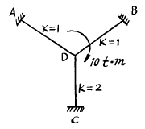
- 1.25t· m
- 2.5t· m
- 3.3t· m
- 5t· m
(정답률: 17%)
49. 그림과 같은 보에서 최대 휨응력도로 옳은 것은 ? (단, 자중은 무시한다.)
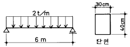
- 150㎏/㎝2
- 112.5㎏/㎝2
- 750㎏/㎝2
- 5.6㎏/㎝2
(정답률: 34%)
50. 강도설계법에서 철근콘크리트 기둥의 단면적에 대한 최소 철근비는?
- 0.1%
- 0.2%
- 0.3%
- 0.4%
(정답률: 알수없음)
51. 그림은 연직하중을 받는 철근콘크리트 보의 단부의 균열 상태를 표시한 것이다. 전단력에 의해 나타나는 것은?
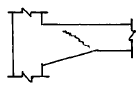
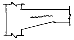
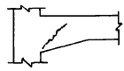
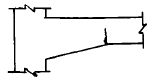
(정답률: 59%)
52. 다음은 슬래브에 배력 철근을 배근하는 이유에 대한 설명이다. 틀린 것은?
- 슬래브에 작용하는 응력을 고르게 분포시킨다.
- 슬래브 주 철근의 간격을 유지한다.
- 슬래브 주 철근의 량을 감소시킬 수 있다.
- 콘크리트 건조 수축에 의한 수축을 감소할 수 있다.
(정답률: 30%)
53. P = 15t, M = 1.125t· m를 받는 원형기둥에 인장응력이 생기지 않는 최소 기둥지름은?
- 60㎝
- 50㎝
- 40㎝
- 30㎝
(정답률: 알수없음)
54. 그림과 같은 단면이 일정한 단순보의 중앙점에 집중하중 P가 작용할 때 중앙점의 처짐은 다음중 어느 것인가?
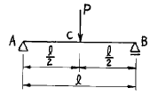
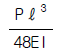
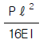
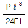
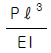
(정답률: 34%)
55. 가구식 구조물의 횡력에 대한 안전한 구조로서 가장 좋은 방법은?
- 통재기중을 설치한다.
- 샛기둥을 많이 댄다.
- 가새를 유효하게 설치한다.
- 부재의 단면을 크게 한다.
(정답률: 30%)
56. 건축물의 지붕면이 받는 풍압력과 관계없는 사항은?
- 지붕면적
- 지붕모양
- 속도압
- 건물의 중량
(정답률: 50%)
57. 그림과 같은 하중을 받는 기초에서 기초 지반면에 일어나는 최대 응력도는?
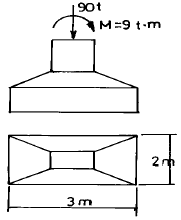
- 15t/m2
- 18t/m2
- 21t/m2
- 25t/m2
(정답률: 43%)
58. 철근콘크리트 계단에 대한 내용중 틀린 것은?
- 구조형식은 슬래브식, 계단보식, 캔틸레버식이 있다.
- 캔틸레버식의 주근은 계단 경사방향으로 둔다.
- 2변고정 슬래브식 계단의 주근은 경사진 방향으로 둔다.
- 4변고정 계단의 주근은 계단 나비 방향으로 둔다.
(정답률: 19%)
59. 크리프(Creep)의 증가에 영향을 미치는 내용과 관계가 먼 것은?
- 재하개시의 재령이 짧을수록
- 경과 시간이 클수록
- 물시멘트비가 적을수록
- 재하응력이 클수록
(정답률: 34%)
60. 연약지반에 대한 대책으로서 적절하지 못한 것은?
- 건물을 경량화한다.
- 건물의 중량분배를 고려한다.
- 이웃 건물과의 거리를 멀게 한다.
- 평면길이를 길게한다.
(정답률: 38%)
4과목: 건축설비
61. 강전설비에 해당하지 않는 것은?
- 조명설비
- 동력설비
- 배연설비
- 간선설비
(정답률: 알수없음)
62. 배수관에 트랩을 설치하는 주된 이유는?
- 배수관의 신축을 조절하기 위하여
- 배수의 역류를 막기 위하여
- 취기(악취)를 차단하기 위하여
- 배수의 동결을 방지하기 위하여
(정답률: 알수없음)
63. 배관의 신축이음에 해당되지 않는 것은?
- 곡관(Loop)형
- 벨로즈(Bellows)형
- 스위블(Swivel)형
- 섹스티아(Sextia)형
(정답률: 59%)
64. 전기설비에서 교류에 해당하지 않는 것은?
- 전등
- 동력
- 전열
- 통신설비
(정답률: 알수없음)
65. 인터폰설비에서 1대의 모기에 임의 대수의 자기를 접속한 것으로 모기에서는 어느 자기나 호출 통화할 수 있으나 자기 상호간은 모기의 중계에 의해서 통화가 가능한 방식은?
- 모자식
- 상호식
- 복합식
- 병용식
(정답률: 알수없음)
66. 좋은 실내 조명으로 요건이 부적당한 것은?
- 적당한 조도
- 광(光)의 균일도와 방향
- 현휘가 발생할것
- 경제적일것
(정답률: 알수없음)
67. 난방부하의 계산방법이 아닌 것은?
- 수정 bin 법
- 동적부하 해석법
- 확장도일법
- 간헐공조 계산법
(정답률: 8%)
68. 증기난방 설비에 대한 기술중 옳은 것은?
- 겨울에 난방중지의 경우 동결파손이 적다.
- 먼지의 비산이 없어 병원의 난방에 적합하다.
- 예열시간은 길다.
- 소음이 적다.
(정답률: 27%)
69. 일반 건축물의 경우 피뢰침의 보호각의 기준은 최대 몇도인가?
- 20°
- 40°
- 60°
- 80°
(정답률: 알수없음)
70. 급탕배관 시공상 주의사항 중 옳게 된 것은?
- 2개 이상의 엘보우를 사용하여 나사회전을 이용해서 신축을 흡수하는 조인트는 슬리브형이다.
- 강관의 경우 신축이음쇠는 30m 이내마다 1개소씩 설치한다.
- 배관구배의 경우 강제 순환식은 1/100 정도로 하는 것이 좋다.
- 배관도중 밸브를 설치하는 경우, 공기의 정체를 방지하기 위하여 스톱밸브를 사용한다.
(정답률: 알수없음)
71. 광원의 종류중 한 등당 큰 광속을 얻을 수 있고, 또한 수명이 길므로 높은 천장, 투광 조명, 도로 조명에 적합한 것은?
- 백열전구
- 할로겐램프
- 형광램프
- 수은램프
(정답률: 알수없음)
72. 유체의 흐름에 의한 마찰손실이 적으므로 물과 증기배관에 주로 이용되고 게이트밸브라고도 불리우는 것은?
- 체크밸브
- 앵글밸브
- 글로브밸브
- 슬루스밸브
(정답률: 36%)
73. 옥내소화전의 표준 방수압력으로 옳은 것은?
- 1.7㎏/㎝2
- 2.6㎏/㎝2
- 3.5㎏/㎝2
- 4.5㎏/㎝2
(정답률: 14%)
74. 다음 배수통기설비에 관한 기술 중 옳은 것은?
- 통기배관의 설치목적은 하수가스의 실내침입을 방지하는데 있다.
- 각개통기관의 구경은 접속하는 배수관 구경 이상으로 한다.
- 신정통기관의 관경은 배수입관 상단구경의 1/2 이상으로 한다.
- 결합통기관의 관경은 통기수직주관과 동일하거나 또는 50A이상으로 한다.
(정답률: 8%)
75. 처리대상인원이 100명인 수세식 화장실 정화조의 부패조 용량이 11m3일 때 산화조의 쇄석층 용량은?
- 5.5m3
- 6.0m3
- 6.5m3
- 7.0m3
(정답률: 28%)
76. 다음 공기조화부하중 잠열부하가 발생하는 것은?
- 일사에 의한 부하
- 송풍기부하
- 덕트의 열손실
- 틈새바람에 의한 부하
(정답률: 25%)
77. 1.8㎏/㎝2 정수압이 작용할 때 직결급수는 어느정도까지 상승이 가능한가 ? (단, 마찰손실은 무시한다.)
- 0.18m
- 1.8m
- 18m
- 180m
(정답률: 25%)
78. 벽면적이 10m2, 열관류율 3㎉/m2h℃, 실내온도 18℃, 외기온도 -12℃일때 관류에 의한 열손실은?
- 360㎉/h
- 540㎉/h
- 780㎉/h
- 900㎉/h
(정답률: 20%)
79. 급수방식에 대한 설명 중 틀린 것은?
- 수도직결식은 급수탱크가 필요없기 때문에 급수설비가 간단하다.
- 고가 탱크방식은 일정한 수압으로 급수가 가능하다.
- 압력 탱크방식은 국부적으로 고압이 필요한 경우에 유용하다.
- 펌프직송방식중 변속펌프방식은 압력변동이 심하기 때문에 아파트에서는 사용이 곤란하다.
(정답률: 알수없음)
80. 복사난방의 특징 중 옳지 않은 것은?
- 실내바닥면의 이용도가 높다.
- 방이 개방상태에서도 난방 효과가 있다.
- 하자 발견이 어렵고 보수가 어렵다.
- 천정이 높은방의 난방은 불가능하다.
(정답률: 알수없음)
5과목: 건축관계법규
81. 다음 중 계단에 관한 기술 중 틀린 것은?
- 높이가 3m를 넘는 계단은 높이 3m 이내마다 너비 0.9m 이상의 계단참을 설치하여야 한다.
- 높이가 1m를 넘는 계단 및 계단참의 양옆에는 난간을 설치하여야 한다.
- 너비가 3m를 넘는 계단에는 계단의 중간에 너비 3m이내마다 난간을 설치하여야 한다.
- 돌음계단의 단너비는 그 좁은 너비의 끝부분으로부터 30cm 위치에서 측정한다.
(정답률: 43%)
82. 헬리포트 설치기준으로 옳지 않은 것은?
- 헬리포트의 길이와 너비는 각각 22m 이상으로 한다.
- 헬리포트의 중심으로부터 반경 12m 이내에는 헬리콥터의 이· 착륙에 장애가 되는 건축물을 설치해서는 안된다.
- 헬리포트 중앙부분에는 지름 9m의 "H" 표지를 백색으로 한다.
- 헬리포트의 주위한계선은 백색으로 하되, 그 선의 너비는 38cm로 한다.
(정답률: 20%)
83. 출입구가 1개 일 때 주차형식에 따른 차로의 너비로 옳지 않은 것은?
- 평행주차 - 5.0m
- 60° 대향주차 - 5.0m
- 교차주차 - 5.0m
- 직각주차 - 6.0m
(정답률: 10%)
84. 노외 주차장의 출구와 입구를 설치할 수 없는 도로의 종단구배의 기준은?
- 종단구배가 5%를 초과하는 도로
- 종단구배가 10%를 초과하는 도로
- 종단구배가 15%를 초과하는 도로
- 종단구배가 20%를 초과하는 도로
(정답률: 알수없음)
85. 건축물이 있는 대지를 분할 하고자 할 경우 관련기준이 아닌 것은?
- 일조 등의 확보를 위한 건축물의 높이제한
- 대지와 도로와의 관계
- 건축물의 용도
- 건축물의 용적률
(정답률: 25%)
86. 건축법상 건설교통부령이 정하는 기준에 따른 간막이벽의 설치대상이 아닌 것은?
- 학교의 교실
- 의료시설의 병실
- 숙박시설의 객실
- 도서관의 열람실
(정답률: 20%)
87. 부설주차장 설치기준에 관한 기술 중 옳지 않은 것은?
- 공동주택 : 시설면적에 따라 설치대수를 산정
- 골프연습장 : 타석수에 따라 설치대수를 산정
- 옥외수영장 : 정원수에 따라 설치대수를 산정
- 백화점 : 매장면적에 따라 설치대수를 산정
(정답률: 39%)
88. 다음 중 토질에 따른 경사도가 가장 큰 것은?
- 연암
- 암괴 또는 호박돌이 섞인 점성토
- 모래질흙
- 점토
(정답률: 알수없음)
89. 다음 중 맞벽건축 및 연결복도와 관련한 내용으로 옳지 않은 것은?
- 맞벽은 방화벽으로 축조하여야 한다.
- 건축물과 복도 또는 통로의 연결부분에 방화셔터 또는 방화문을 설치하여야 한다.
- 마감재료는 불연재료로 하여야 한다.
- 맞벽건축은 상업지역에서만 할 수 있다.
(정답률: 42%)
90. 6층 이상의 백화점의 거실면적의 합계가 10,000m2일 때 승용승강기의 최소대수는 ? (단, 16인승을 기준으로 함)
- 3대
- 4대
- 5대
- 6대
(정답률: 알수없음)
91. 에너지절약계획서를 제출하여야 하는 사람과 시기를 바르게 설명한 것은?
- 건축주가 건축허가를 신청하는 때
- 설계자가 건축허가를 신청하는 때
- 건축주가 착공신고를 신청하는 때
- 설계자가 착공신고를 신청하는 때
(정답률: 20%)
92. 주차장의 설치의무면제와 관련이 없는 사항은?
- 시설물의 위치
- 시설물의 설치시기
- 시설물의 용도 및 규모
- 부설주차장의 규모
(정답률: 44%)
93. 지방자치단체의 조례가 정하는 대지를 분할할 수 있는 최소한의 면적으로 옳지 않은 것은?
- 상업지역 - 100m2
- 주거지역 - 60m2
- 공업지역 - 150m2
- 녹지지역 - 200m2
(정답률: 20%)
94. 부설주차장을 부지인근에 설치할 수 있는 원칙적인 주차 대수의 최대규모는?
- 100대
- 200대
- 300대
- 400대
(정답률: 37%)
95. 일반주거지역 안에서 건축물을 건축하는 경우 일조 등의 확보를 위한 건축물의 높이 제한에 관한 것이다. 건축물의 각 부분을 정북방향으로의 인접대지경계선으로부터 띄어야 할 거리로서 옳지 않은 것은?
- 높이 3m의 부분 : 1m 이상
- 높이 6m의 부분 : 2m 이상
- 높이 8m의 부분 : 3m 이상
- 높이 9m의 부분 : 4.5m 이상
(정답률: 17%)
96. 다음 건축물 중 건축법을 적용하는 것은?
- 철도의 선로부지 안에 있는 플랫트홈
- 고속도로 통행료 징수시설
- 컨테이너를 이용한 공사용 가설건축물
- 문화재보호법에 의한 가지정문화재
(정답률: 알수없음)
97. 건축법상 방화구획의 설치기준 중에서 완화하여 적용할 수 있는 부분이 아닌 것은?
- 공공용시설 중 교도소시설 부분
- 주요구조부가 내화구조 또는 불연재료로 된 주차장의 부분
- 건축물의 최상층으로서 대규모 회의장의 용도에 사용하는 부분으로서 당해 용도로의 사용을 위하여 불가피한 부분
- 복층형인 공동주택의 세대 안의 층간 바닥부분
(정답률: 17%)
98. 건축법 및 건축물의 설비기준 등에 관한 규칙에 의한 건축설비가 아닌 것은?
- 오물처리설비
- 유선방송수신시설
- 소화설비
- 경보설비
(정답률: 10%)
99. 막다른 도로의 길이가 32m일 경우 최소한의 도로폭은 얼마인가?
- 3m
- 4m
- 5m
- 6m
(정답률: 36%)
100. 철골조인 경우 피복두께와 상관없이 내화구조로 인정될 수 있는 것은?
- 내력벽
- 기둥
- 보
- 계단
(정답률: 29%)